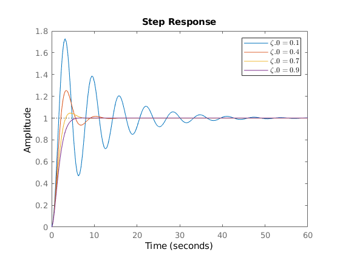

ES155 Problem Set 4
Contents
1.c
w0 = 1;
z_0 = [0.1 0.4 0.7 0.9];
a0 = 1;
a1 = 2;
a2 = 1;
b0 = 0.5;
C = [0 1]
D = 0
eigs = zeros(2,length(z_0));
figure(1); clf;
hold on;
for i = 1:length(z_0)
z0 = z_0(i)
k1 = 4*z0*w0 - 8;
k2 = 2*w0^2 - 4*z0*w0 + 6;
kr = 2*w0^2;
A = [-a0 - a1, a1; a2, -a2];
B = [b0; 0];
K = [k1 k2];
eigs(:,i) = eig(A - B*K);
sys = ss(A-B*K, kr*B, C, D);
step(sys)
end
hold off;
z0_legend = strcat("${\zeta}_{0} = ", strtrim(cellstr(num2str(z_0'))'), "$")
legend(z0_legend, 'Interpreter', 'latex')
w = warning ('off','all');
fprintf(['The eigenvalues of the closed loop system response $(A - B*K)$ are '])
for i = 1:length(z_0)
fprintf(['$%1.4f$ and $%1.4f$ for $\zeta_0 = %1.1f$'], eigs(1,i), eigs(2,i), z_0(i))
end
w = warning ('on','all');
C =
0 1
D =
0
z0 =
0.1000
z0 =
0.4000
z0 =
0.7000
z0 =
0.9000
z0_legend =
1×4 string array
Columns 1 through 3
"${\zeta}_{0} = 0.1$" "${\zeta}_{0} = 0.4$" "${\zeta}_{0} = 0.7$"
Column 4
"${\zeta}_{0} = 0.9$"
The eigenvalues of the closed loop system response $(A - B*K)$ are $-0.1000$ and $-0.1000$ for $$0.1000$ and $$-0.4000$ and $-0.4000$ for $$0.4000$ and $$-0.7000$ and $-0.7000$ for $$0.7000$ and $$-0.9000$ and $-0.9000$ for $$0.9000$ and $